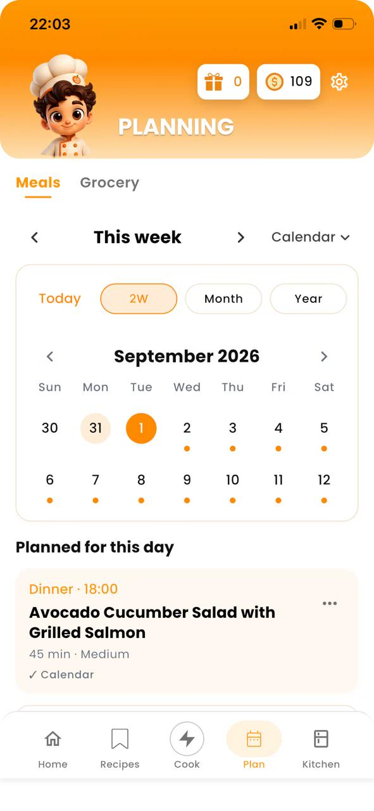

Does Delixio include meal planning?
Yes. Delixio includes a meal calendar for planning meals and shopping entries ahead.
Planning

A meal planner app should reduce decision fatigue, not create a second job. The most sustainable plans are short, flexible, and based on food you will actually cook, often starting from ingredients already at home.
Delixio includes a meal calendar so you can save recipes and schedule meals after generating ideas from your ingredients. You can also export plans one-way to your device calendar.
Some planners start with recipe collections. That works if you love browsing. Ingredient-first planning works better when the fridge is already full and you need dinners that consume what you bought.
Generate ideas from your ingredients, unlock a full recipe when you want it, save it, then add it to the meal calendar (Today, 2 weeks, Month, or Year views). If ingredients are missing, build a grocery list, and you can plan a shopping day too.
Export is one-way to your device calendar (Delixio can create or update local calendar events). It is not two-way Google/Apple cloud sync.
Delixio is currently available for iPhone and Android. Type the ingredients you already have, explore free recipe ideas, then unlock a full recipe when you want to cook. You get 1 free full recipe every day, plus optional credit packs. No subscription.
Yes. Delixio includes a meal calendar for planning meals and shopping entries ahead.
No. Many people plan only a few dinners and leave flexible nights.
Yes. You can add recipes to the meal calendar to schedule when you want to cook them, and optionally export those plans one-way to your device calendar.
No. Even cooking for one is easier with a short plan and leftover strategy.